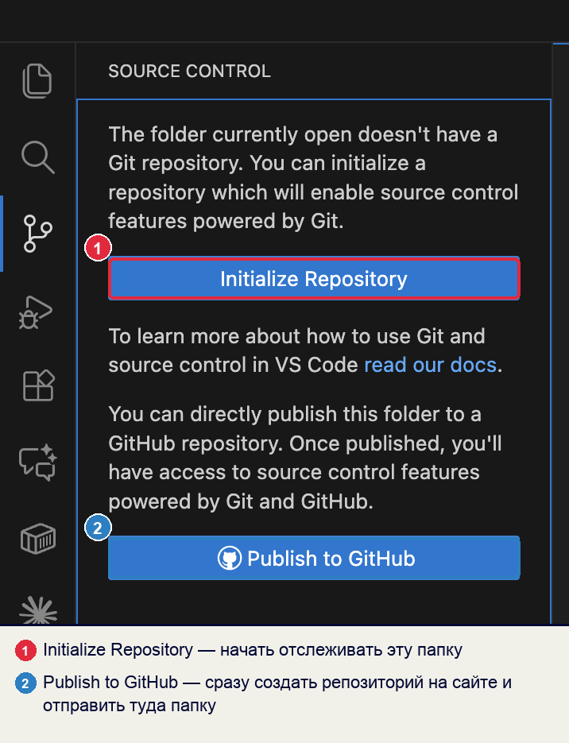
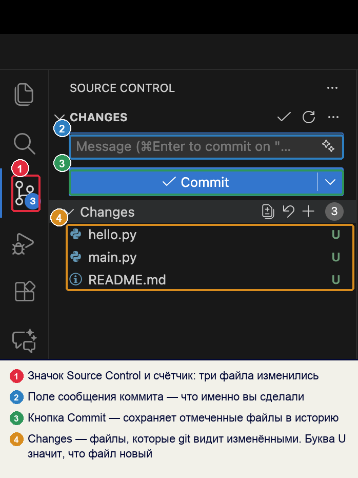
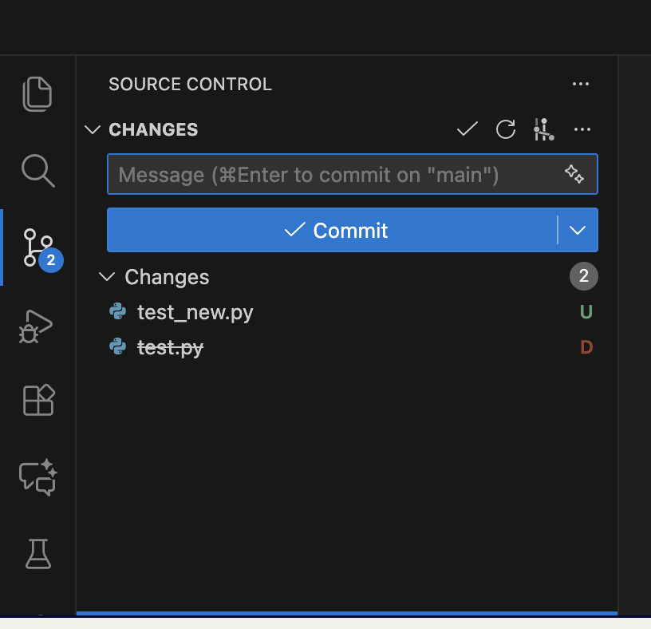
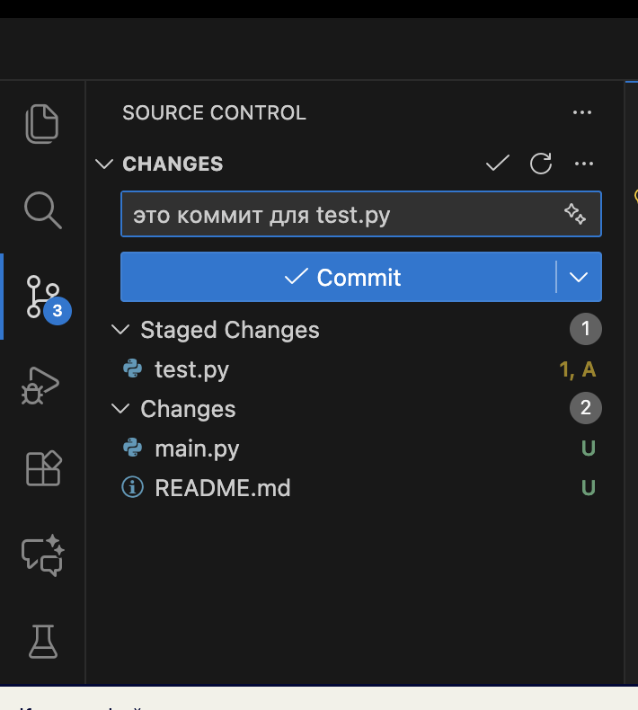
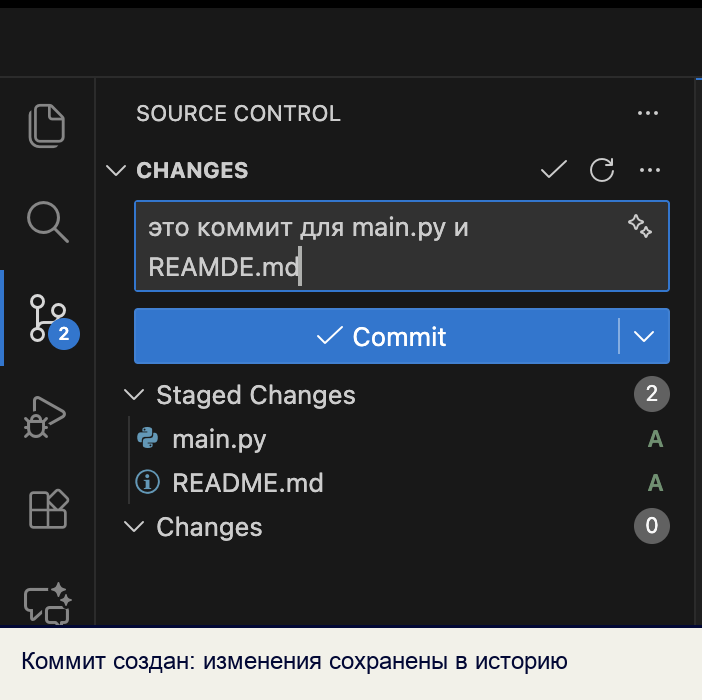
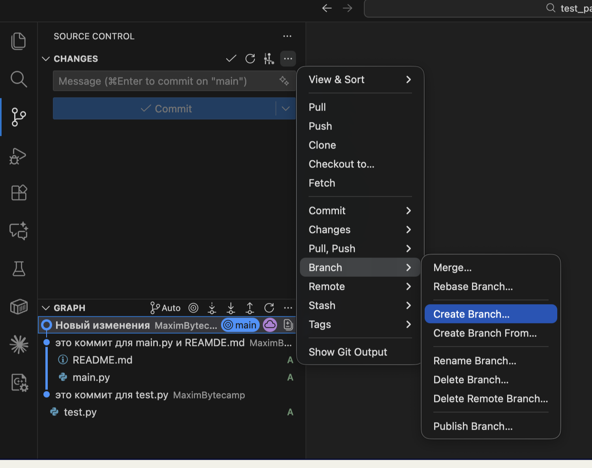

Справочник по Git и GitHub · модуль 2 · первый репозиторий в VS Code
Глава 2.1
Панель Source Control:
что где находится
Вся работа с историей проекта в VS Code идёт через одну панель. В главе разобран каждый её элемент: счётчик на значке, поле сообщения, кнопка Commit, разделы Changes и Staged Changes, буквы у имён файлов и меню с остальными командами.
- Категория
- Рабочее место
- Уровень
- Начальный
- Связанные темы
- Первый репозиторий, коммит
- Зачем это знать
- Понимать, что показывает панель, и не нажимать кнопки наугад
§1Зачем отдельная панель
Редактор показывает файлы такими, какие они сейчас. Вопросы «что я изменил за сегодня», «какие файлы готовы к сохранению» и «что уйдёт в историю по кнопке Commit» из обычного списка файлов не видны. На них отвечает панель Source Control — вкладка VS Code, которая всё время сравнивает папку проекта с последним сохранённым состоянием и показывает разницу.
Открывается она значком с развилкой на левой полосе или сочетанием клавиш:
| Действие | Как |
|---|---|
| Открыть панель Source Control | CtrlCmd + Shift + G |
| Открыть проводник (список файлов) | CtrlCmd + Shift + E |
| Открыть терминал внутри редактора | Ctrl + ~ |
| Найти любую команду по названию | CtrlCmd + Shift + P |
Зачем это нужно в работе
- Перед сохранением видно, что именно уходит в историю. Панель показывает список изменённых файлов до нажатия кнопки, поэтому случайно закоммитить черновик или чужой файл сложнее.
- Не нужно помнить, что вы трогали. После дня работы список изменений собран за вас — по нему же пишется пояснение к коммиту.
- Ошибка видна сразу. Если в списке лежит файл, которого там быть не должно — пароль, ключ, гигабайтный архив, — это заметно до отправки, а не после.
§2Карта окна VS Code
Прежде чем разбирать панель, полезно договориться о названиях зон окна: дальше они встречаются постоянно.
§3Папка открыта, репозитория ещё нет
Откройте любую папку через File → Open Folder и загляните в панель. Пока Git в этой папке не заведён, она предлагает ровно два действия:

Разница между кнопками — в главе 1.2: первая создаёт папку .git на диске, вторая дополнительно заводит репозиторий на сервисе и отправляет туда файлы. Для учебного проекта обычно нажимают первую, а публикуют позже, когда есть что показывать.
Если нажать Initialize Repository в папке Documents или в домашней папке пользователя, Git начнёт отслеживать все ваши файлы разом — тысячи документов, загрузок и настроек. Открывайте папку конкретного проекта: в ней должны лежать только файлы этого проекта.
§4Панель работающего репозитория
Как только репозиторий заведён и в папке появились изменения, панель наполняется. Вот она с разметкой по элементам:

| Элемент | Что делает | Что важно знать |
|---|---|---|
| Значок со счётчиком | Открывает панель, цифра — сколько файлов изменилось с прошлого коммита | Счётчик виден с любой вкладки: удобно замечать, что вы что-то правили и забыли сохранить в историю |
| Поле Message | Пояснение к коммиту: что именно сделано | Без пояснения коммит не создастся. Пишут не «правки», а «добавил форму обратной связи» |
| Кнопка Commit | Сохраняет отмеченные изменения в историю на вашем компьютере | Это ещё не отправка на GitHub: коммит остаётся локальным, пока не нажат Sync |
| Раздел Changes | Файлы, которые Git видит изменёнными | Справа от имени — буква состояния, а при наведении появляются кнопки с плюсом и стрелкой отмены |
Наведите указатель на файл в списке — справа появятся три значка. Плюс переносит файл в подготовленные, круговая стрелка отменяет правки, а значок открытой книги показывает файл целиком.

Кнопка Discard Changes возвращает файл к состоянию последнего коммита, а сделанные правки удаляет без корзины. Git их не сохранял, поэтому восстановить нечего. Перед нажатием посмотрите, что именно в файле изменилось.
§5Буквы у имён файлов
Справа от каждого файла стоит буква — состояние этого файла с точки зрения Git. Их пять, и они цветные.
| Буква | Значит | Когда появляется |
|---|---|---|
| U — untracked | Новый файл, Git о нём ещё не знает | Создали файл в папке проекта |
| M — modified | Файл был в истории и изменён | Открыли и поправили существующий файл |
| D — deleted | Файл удалён из папки | Удалили файл, который был в прошлом коммите |
| A — added | Новый файл уже подготовлен к коммиту | Нажали плюс у файла с буквой U |
| R — renamed | Файл переименован | Сменили имя файла, содержимое осталось прежним |

test_new.py (U), исчез test.py (D, имя зачёркнуто). После коммита он сам поймёт, что содержимое совпадает, и покажет это как переименование.§6Changes и Staged Changes
В панели два списка, и разница между ними — главное, что нужно понять про коммит.
- Changes — всё, что изменилось в папке. В коммит это не попадёт.
- Staged Changes — то, что вы отобрали для следующего коммита. Попадёт именно это.

test.py, он в Staged Changes. Два других остались в Changes и в этот коммит не войдут. Такое разделение позволяет сохранить одну законченную правку, не смешивая её с незаконченными.Путь файла от сохранения в редакторе до истории проходит четыре состояния:
Путь одного файла
Сохранение файла в редакторе (CtrlCmd + S) — это шаг 1, а не коммит. Пока не пройдены шаги 3 и 4, вернуться к этой версии нельзя.
Ассоциация: посылка на почте
Вещи лежат дома — это ещё не отправление. Вы складываете в коробку то, что решили отправить, заклеиваете её и подписываете, что внутри. Всё остальное остаётся дома до следующего раза.
Changes — вещи дома. Плюс у файла кладёт его в коробку (Staged Changes). Поле Message — подпись на коробке. Кнопка Commit заклеивает её: содержимое зафиксировано.
Где не совпадаетКоробка уезжает, а файл остаётся на месте и его можно править дальше. Коммит забирает не сам файл, а его состояние на этот момент.
§7Что меняется после Commit
Нажали Commit — панель перестраивается. Подготовленные файлы уходят из списка, счётчик обнуляется, поле сообщения очищается.

Если пояснение не написано, VS Code откроет отдельную вкладку COMMIT_EDITMSG и попросит его ввести — коммит без пояснения не создаётся. Это не придирка редактора: пояснение хранится внутри коммита и потом отвечает на вопрос «зачем это изменение».
§8Меню с остальными командами
Кнопок в панели немного — остальное спрятано под значком с тремя точками справа от слова CHANGES. Там собраны все команды Git, которые понадобятся дальше.

Сейчас запоминать эти пункты не нужно. Важно другое: если команда не нашлась среди кнопок, она в этом меню или в палитре команд по слову git. Ничего дополнительно устанавливать не придётся — работа с Git встроена в редактор.
| Пункт меню | Что делает | В какой главе |
|---|---|---|
Pull, Push, Fetch | Обмен коммитами с копией на GitHub | Модуль 4 |
Clone | Скачать чужой репозиторий себе | Глава 2.2 |
Commit → Undo Last Commit | Отменить последний коммит, вернув файлы в подготовленные | Глава 2.6 |
Changes → Stage All | Подготовить все изменения разом | Глава 2.3 |
Branch | Создать, переключить, переименовать, удалить ветку | Модуль 3 |
Stash | Отложить незаконченные правки, не делая коммит | Глава 3.5 |
§9Счётчик и строка состояния
Два места показывают состояние проекта, даже когда панель закрыта.
Синий кружок на значке Source Control — сколько файлов изменилось с последнего коммита. Ноль означает, что папка совпадает с историей.
Строка состояния внизу окна — слева имя текущей ветки и значок обмена с сервером. Три состояния, которые встречаются чаще всего:
Всё сохранено и отправлено. Рядом с именем ветки нет звёздочки, обе стрелки на нуле: папка, история и копия на GitHub совпадают.
Звёздочка у имени ветки. В папке есть изменения, которых нет в истории: коммит ещё не сделан.
Стрелки показывают обмен с сервером. 2↑ — два ваших коммита ещё не отправлены. 3↓ — на GitHub есть три чужих коммита, которых нет у вас. Нажатие на эту область запускает обмен.
Привычка смотреть на стрелки перед началом работы экономит разбирательства со слияниями: сначала забрать чужое, потом делать своё.
§10Пошаговый разбор: от пустой папки до коммита
Дальше — сквозной сценарий на одном учебном проекте. Повторяйте по шагам у себя: после каждого действия показано, что должно появиться в панели. Проект называется proba-git, в нём будет один файл.
Картинки в этом параграфе — точная перерисовка панели, а не кадры экрана. Так каждый шаг показан на одном и том же проекте, без посторонних файлов: у вас на экране будет ровно то же самое, вплоть до имён и букв.
Шаг 1. Создать папку и открыть её
Создайте на рабочем столе папку proba-git — пустую, без файлов. Откройте её в VS Code: File → Open Folder, выбрать папку, Open. Затем откройте панель: CtrlCmd + Shift + G.
The folder currently open doesn't have a Git repository. You can initialize a repository which will enable source control features powered by Git.
Initialize Repository
Publish to GitHub
Что видно: Git в этой папке ещё не заведён, поэтому панель предлагает его создать. В строке состояния имени ветки нет.
Шаг 2. Нажать Initialize Repository
Нажмите подсвеченную кнопку. На диске появится скрытая папка .git, а панель сменит вид.
Message (⌘Enter to commit on "main")
✓ Commit
Изменений нет — папка пуста.
Что изменилось: появились поле сообщения и кнопка Commit, а внизу — имя ветки main. Списки пустые: в папке пока нет ни одного файла.
Шаг 3. Создать первый файл
В проводнике VS Code (CtrlCmd + Shift + E) нажмите значок нового файла, назовите его privet.html и напишите одну строку:
<h1>Привет, это моя страница</h1>
Сохраните файл: CtrlCmd + S. Вернитесь в панель.
Message (⌘Enter to commit on "main")
✓ Commit
Changes 1
privet.htmlU
Что видно: файл появился в разделе Changes с буквой U — новый, Git о нём ещё не знает. Справа вверху счётчик 1, внизу у имени ветки появилась звёздочка.
Шаг 4. Посмотреть, что именно изменилось
Нажмите на имя файла в панели. В правой части откроется окно сравнения: слева прошлая версия, справа текущая.
Что видно: зелёным показаны добавленные строки, красным были бы удалённые. Для нового файла левая часть пуста — сравнивать не с чем.
Шаг 5. Подготовить файл к коммиту
Наведите указатель на файл в списке и нажмите значок + (подсказка Stage Changes).
Message (⌘Enter to commit on "main")
✓ Commit
Staged Changes 1
privet.htmlA
Changes 0
Что изменилось: появился раздел Staged Changes, файл переехал туда, буква сменилась с U на A — подготовлен к коммиту. В Changes теперь ноль.
Передумали — наведите на файл в Staged Changes и нажмите − (Unstage Changes): он вернётся обратно. Подготовку можно отменять сколько угодно раз, история от этого не меняется.
Шаг 6. Написать пояснение
Щёлкните в поле Message и напишите, что сделано. Не «правки» и не «коммит», а по существу:
Добавил страницу с приветствием
✓ Commit
Staged Changes 1
privet.htmlA
Что видно: поле заполнено, кнопка Commit готова к нажатию. Пояснение останется в истории навсегда — через месяц по нему будет понятно, зачем этот коммит.
Шаг 7. Сделать коммит
Нажмите ✓ Commit. Панель опустеет.
Message (⌘Enter to commit on "main")
✓ Commit
Изменений нет: папка совпадает с историей.
Что изменилось: списки пусты, счётчик на значке погас, звёздочка у ветки исчезла. Появилось 1↑ — один коммит сделан, но ещё не отправлен на GitHub.
Шаг 8. Изменить файл ещё раз
Откройте privet.html, допишите вторую строку и сохраните:
<h1>Привет, это моя страница</h1> <p>Учусь работать с Git.</p>
Message (⌘Enter to commit on "main")
✓ Commit
Changes 1
privet.htmlM
Что видно: тот же файл снова в Changes, но буква теперь M — изменён, а не новый. Git уже знает этот файл и следит за ним.
Нажмите на файл — в окне сравнения будет видно, что именно добавилось:
Что видно: первая строка одинаковая и не подсвечена, вторая добавлена — зелёная. Именно так выглядит ревью чужой работы: смотрят не весь файл, а подсвеченные строки.
Повторите шаги 5–7 для этой правки — и в истории проекта будет два коммита. На этом панель разобрана полностью: всё остальное в ней делается теми же четырьмя действиями.
§11Частые вопросы
§12Проверьте себя
На значке Source Control стоит цифра 4. Что это означает?
Четыре файла в папке проекта отличаются от последнего коммита: изменены, созданы или удалены. Это не число коммитов и не количество файлов проекта — только то, что разошлось с историей.
Чем Changes отличается от Staged Changes?
Changes — всё, что изменилось в папке; в коммит это не войдёт. Staged Changes — то, что вы отобрали кнопкой с плюсом; именно это сохранится при нажатии Commit. Разделение позволяет положить в коммит часть правок, а остальные оставить на потом.
Рядом с файлом стоит буква U. Что это за файл и что с ним делать?
Файл новый: он лежит в папке, но в истории его ещё нет. Чтобы он попал в проект, нажмите плюс — буква сменится на A, файл окажется в Staged Changes, — и сделайте коммит. Если файл попал в папку случайно, его можно просто удалить или внести в .gitignore.
Вы сделали коммит, но на GitHub изменений не видно. Почему?
Коммит сохраняется на вашем компьютере. Чтобы он оказался на сайте, нужна отправка: кнопка Sync Changes или пункт Push в меню. В строке состояния при этом видно ↑ 1 — один коммит ждёт отправки.
Что произойдёт, если нажать круговую стрелку у изменённого файла?
Файл вернётся к состоянию последнего коммита, а все правки после него исчезнут без возможности вернуть. Git их не сохранял, поэтому восстанавливать нечего. Если правки нужны, но мешают — их откладывают через Stash, а не отменяют.
Объясните своими словами, зачем в панели два списка, а не один.
Чтобы коммит описывал одно законченное изменение. За час работы обычно правится несколько разных вещей: одна готова, другая нет. Отбор через Staged Changes позволяет сохранить в историю только готовое, а незаконченное оставить в работе.
§13Шпаргалка по главе
CtrlCmd+Shift+G
значок с развилкой слева
Changes — изменилось в папке
Staged Changes — войдёт в коммит
U — новый файл
M — изменён
D — удалён
A — подготовлен
плюс — подготовить
минус — вернуть из подготовленных
круговая стрелка — отменить правки
main — текущая ветка
↑ 2 — не отправлено коммитов
↓ 3 — не забрано чужих
значок «…» у слова CHANGES
палитра команд, слово git
Итог главы
Панель Source Control показывает разницу между папкой проекта и последним коммитом. Изменённые файлы попадают в список Changes, отобранные кнопкой с плюсом — в Staged Changes, и в коммит уходит только второй список. Буква справа от имени говорит, что именно случилось с файлом, счётчик на значке — сколько файлов разошлось с историей, а строка состояния внизу показывает ветку и сколько коммитов ждут обмена с сервером. Остальные команды спрятаны под тремя точками и в палитре команд. В следующей главе заведём репозиторий двумя способами: свой с нуля и чужой через клонирование.
- Кадры панели сняты в Visual Studio Code на учебных проектах курса.
- Назначение элементов панели и список команд меню — документация VS Code, раздел Source Control.
- Буквы состояний файлов соответствуют выводу
git status— документация Git.